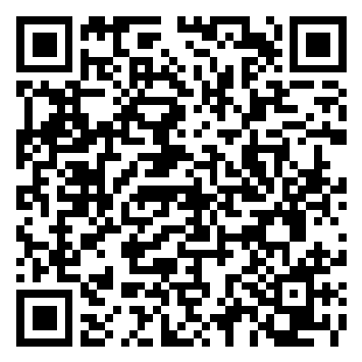

HOME — Scan on your R1
1 · Hosted (GitHub Pages)

Creations tab → add via QR code → scan.
If a warning about an untrusted / non-rabbit source appears, confirm through it.
Creations tab → add via QR code → scan.
If a warning about an untrusted / non-rabbit source appears, confirm through it.

Fallback: points at http://192.168.0.21:3000/r1/.
Use if the hosted version installs but can't reach the server.
Requires the Mac server running and R1 on the same WiFi.